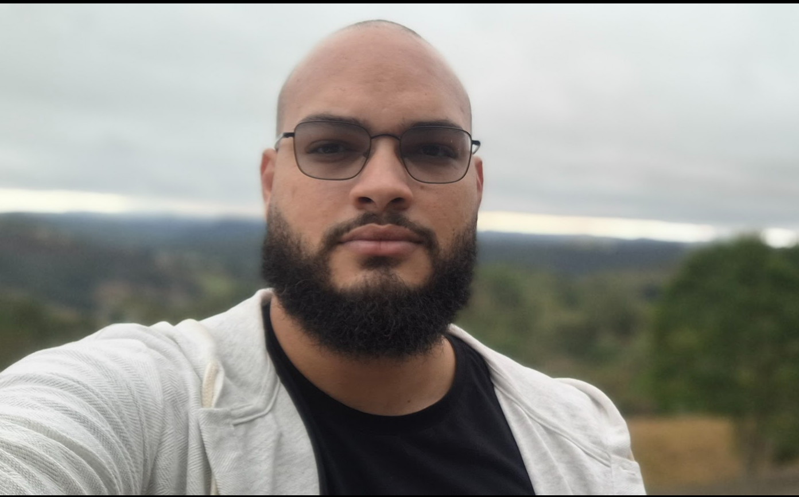

Desenvolvedor Fullstack com +10 anos de experiência
Atuei como Desenvolvedor Fullstack no produto Evaspeech, contribuindo para integrações e dashboards corporativos
Atuei como Analista Desenvolvedor pleno e sênior desde a análise de requistos até a entrega e suporte à operação, com equipes e projetos de tamanhos diversos sempre seguindo práticas ágeis e dashboard kanban usando principalmente Azure DevOps para o gerenciamento dos projetos e mais recentemente utilizando o Jira. Abaixo uma lista de atividades e tecnologias que utilizei:
Na Sharepro eu iniciei minha carreira de desenvolvedor, desde o estágio até conseguir entregar softwares
sozinho.
Também auxiliei no treinamento e desenvolvimento
de outros desenvolvedores iniciantes. Atuei na criação e manutenção de aplicações modulares integradas ao
Sharepoint on premise, aplicações web, desktop,
pocketpc (windows 6.5), tótem digital e cloud. Também atuei por 1 ano internamente em um cliente.
Abaixo uma lista de atividades e tecnologias que utilizei: